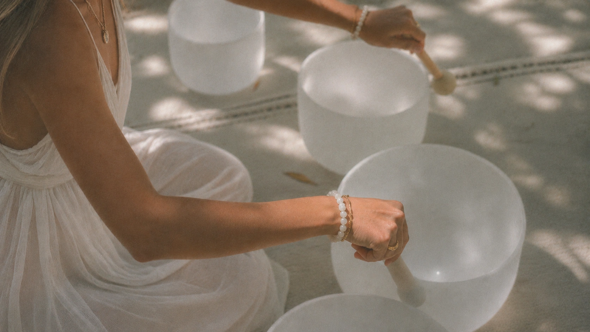

Inmersión sonora
Descansa y recibe. Un viaje sonoro restaurativo y guiado con cuencos de cristal, voz en vivo, shruti box, campanas Koshi y palo de lluvia.
Descubrir la experiencia
DescubrirExperiencias de sonido, respiración y voz para reconectar contigo.
Un espacio donde la vibración, la música y la presencia se encuentran para crear experiencias que invitan a la relajación, la expresión y el bienestar.

SOUND RITUAL · TULUMDescansa y recibe. Un viaje sonoro restaurativo y guiado con cuencos de cristal, voz en vivo, shruti box, campanas Koshi y palo de lluvia.
Descubrir la experienciaRespira, siente y exprésate. Nuestra experiencia insignia combina respiración suave y consciente, exploración vocal y un baño sonoro acústico inmersivo.
Descubrir la experienciaUna práctica guiada y relajante de respiración consciente, vibración vocal, atención corporal y sonidos envolventes. No necesitas experiencia previa.
Descubrir la experienciaUn espacio para desacelerar, descansar y liberar las tensiones de la vida cotidiana.
Una invitación a reconocer nuestras emociones y encontrar nuevas formas de expresión.
Pausas conscientes para reducir el ruido cotidiano y cultivar la atención plena.
Explorar la conexión entre respiración, cuerpo, vibración y percepción.
Creemos que el sonido es una experiencia que va más allá de lo que escuchamos.
Cada vibración, cada respiración y cada nota nos invita a conectar con el momento presente.
En Sound Ritual combinamos sensibilidad musical, exploración vocal y escucha consciente para crear experiencias íntimas y colectivas.
No se trata solamente de recibir sonidos, sino también de descubrir nuestra propia capacidad de resonar, expresar y sentir.
Sound Ritual nace del encuentro entre Danna Arus y Fran Hassard, dos artistas y facilitadoras del sonido que comparten una profunda conexión con la música, la voz y el bienestar.
A través de instrumentos acústicos, vibraciones, respiración consciente y exploración vocal, crean experiencias que invitan a la relajación, la conexión interior y la expresión auténtica.
Su propuesta combina la escucha profunda con el poder de la voz humana, ofreciendo un espacio donde cada persona puede experimentar el sonido de una manera única.
Para reservar una experiencia o conversar sobre tu próxima sesión, escríbenos directamente.